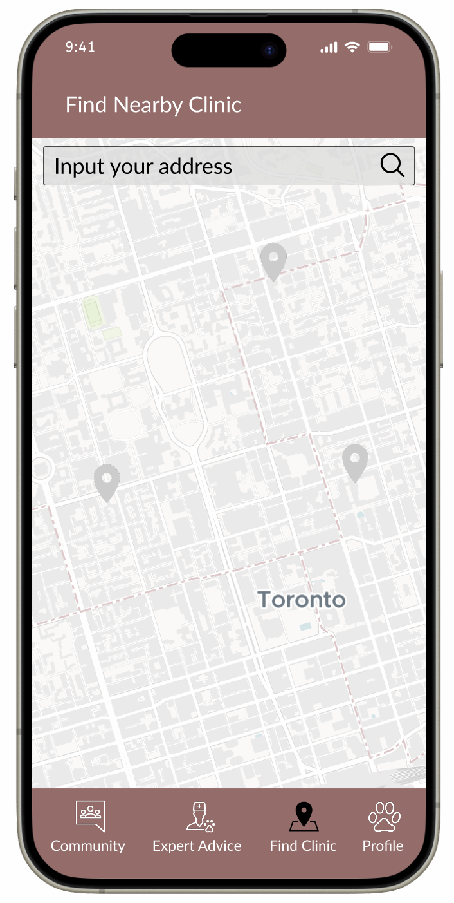
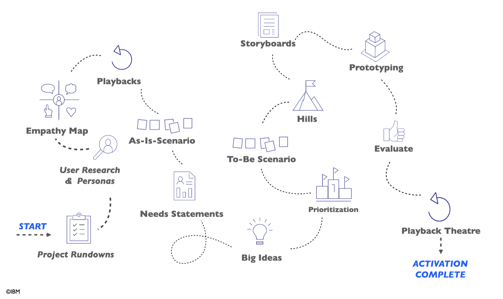

Overview

More than 60% of Canadian households own at least one pet.
However, finding veterinary care, identifying pet symptoms,
and the ability to face emergencies are important problems.
Therefore, the goal of this project is to design a digital platform
(mobile app) that centralizes vet reviews,
provides clinic opening hours, and has reliable resources for pet care.
In this project, we’ve done online research, interviewed pet owners,
developed ideas using our persona, created the prototype, and conducted usability testing.
Each menber of our team lead one of them, and I an leading the ideation process.
Team members - Yue Cao, Yuxin Chen, Ka Yeung Ho, Kewen Wang, and Chi-shiun Yang (me).
Process
We followed the UX design process by IBM. In this case study, there are 5 main sections:
1, 2, 3, 4, and 5.

Understanging the Problem
Before designing our app, we first did online research to find out the situation
and problems for pet owners in Toronto. After this, we collect user needs
with surveys and interviews. After analyzing the data, we discovered these
three pain points:
- Limited availability and long waiting times in veterinary care due to a
large number of pets and a small number of vets.
- Not having plans and enough information while facing emergencies.
- Untransparent and high cost when taking pets to clinics.